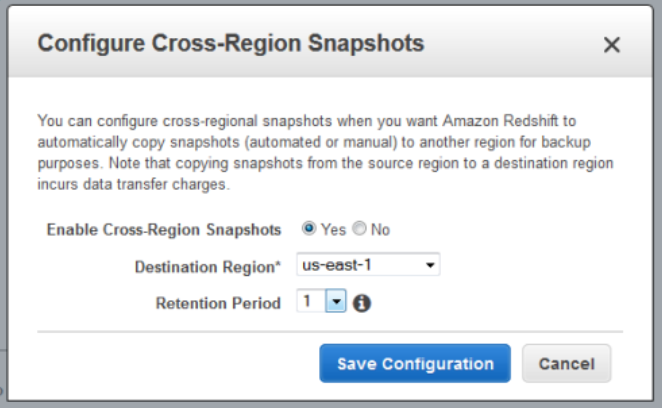
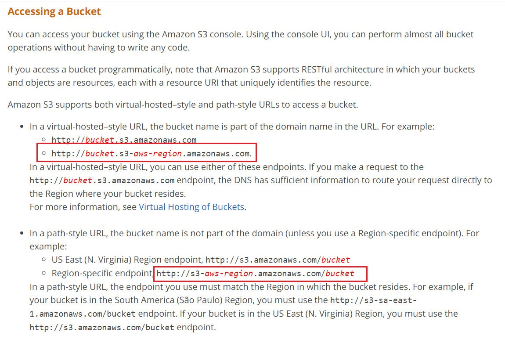

-

Attempt
01 -

Marks Obtained
49 / 65 -

Your score
75.38% -

Time Taken
01 H 19 M 45 S -
Result
Failed
| No | Domain | Total Question | Correct | Incorrect | Unattempted | Marked as Review |
|---|---|---|---|---|---|---|
|
|
|
|
|
|
|
|
|
|
|
|
|
|
|
|
|
|
|
|
|
|
|
|
|
|
|
|
|
|
|
|
|
|
|
|
|
|
|
|
|
|
|
|
|
|
|
|
You have an application running in us-west-2 requiring 6 EC2 Instances running at all times. With 3 Availability Zones in the region viz. us-west-2a, us-west-2b, and us-west-2c, which of the following deployments provides fault tolerance if an Availability Zone in us-west-2 becomes unavailable?
Choose 2 answers from the options given below.
Answer – D and E
Option A is incorrect because, even if one AZ becomes unavailable, you would only have 4 instances available. This does not meet the specified requirements.
Option B is incorrect because, in the case of either us-west-2a or us-west-2b becoming unavailable, you would only have 3 instances available. Even this does not meet the specified requirements.
Option C is incorrect because, if us-west-2a becomes unavailable, you would only have 4 instances available. This also does not meet the requirements.
For more information on AWS Regions and Availability Zones, please visit the following URL:
Note:
In this scenario we need to have 6 instances running all the time even when 1 AZ is down.
Option D- US West 2a-6 , US West 2b - 6, US West 2c-0
If US West 2a goes down we will still have 6 instances running in US West 2b
If US West 2b goes down we will still have 6 instances running in US West 2a
If US West 2c goes down we will still have 6 instances running in US West 2a, 6 instances running in US West 2b
Option E- US West 2a-3 , US West 2b - 3, US West 2c-3
If US West 2a goes down we will still have 3 instances running in US West 2b, 3 instances running in US West 2c
If US West 2b goes down we will still have 3 instances running in US West 2a, 3 instances running in US West 2c
If US West 2c goes down we will still have 3 instances running in US West 2a, 3 instances running in US West 2b
hence options D & E are correct.
For which of the following scenarios should a Solutions Architect consider using ElasticBeanStalk?
Choose 3 answers from the options given below.
Answer – A, C, D
AWS Documentation clearly mentions that the Elastic Beanstalk component can be used to create Web Server environments and Worker environments.
This following diagram illustrates an example Elastic Beanstalk architecture for a web server environment tier and shows how the components in that type of environment tier work together. The remainder of this section discusses all the components in more detail.
- For more information on AWS Elastic beanstalk Web server environments, please visit the following URL:
- For more information on AWS Elastic beanstalk Worker environments, please visit the following URL:
- Option D is correct. We can use Elastic Beanstalk to host static website, and provide the following link.
While reviewing the Auto Scaling events for your application, you notice that your application is scaling up and down multiple times in the same hour.
What design choice could you make to optimize costs while preserving elasticity?
Choose 2 answers from the options given below.
Answer – C and E
Here, not enough time is being given for the scaling activity to take effect and for the entire infrastructure to stabilize after the scaling activity. This can be taken care of by increasing the Auto Scaling group CoolDown timers.
- For more information on Auto Scaling CoolDown, please visit the following URL:
You will also have to define the right threshold for the CloudWatch alarm for triggering the scale down policy.
- For more information on Auto Scaling Dynamic Scaling, please visit the following URL:
A company hosts a popular web application that connects to an Amazon RDS MySQL DB instance running in a default VPC private subnet created with default ACL settings. The web servers must be accessible only to customers on an SSL connection and the database must only be accessible to web servers in a public subnet. Which solution meets these requirements without impacting other running applications?
Select 2 answers from the options given below.
Answer – B and C
This sort of setup is explained in the AWS documentation.
1) To ensure that traffic can flow into your web server from anywhere on secure traffic, you need to allow inbound security at 443.
2) And then, you need to ensure that traffic can flow from the database server to the web server via the database security group.
The below snapshot from the AWS Documentation shows rule tables for security groups that relate to the same requirements as in the question.


For more information on this use case scenario, please visit the following URL:
Options A and D are invalid answers.
Network ACL's are stateless. So we need to set rules for both inbound and outbound traffic for Network ACL's.
Option E is also invalid because to communicate with the MySQL servers we need to allow traffic to flow through port 3306.
An application reads and writes objects to an S3 bucket. When the application is fully deployed, the read/write traffic is expected to be 5,000 requests per second for the addition of data and 7,000 requests per second to retrieve data.
How should the architect maximize the Amazon S3 performance?
Answer – C
NOTE: Based on the S3 new performance announcement, " S3 request rate performance increase removes any previous guidance to randomize object prefixes to achieve faster performance." But Amazon exam questions and answers not yet updated. So Option C is correct answer as per AWS exam.
This recommendation for increasing performance in case of a high request rate in s3 is given in the documentation.
A retailer exports data daily from its transactional databases into an S3 bucket in the Sydney region. The retailer's Data Warehousing team wants to import this data into an existing Amazon Redshift cluster in their VPC at Sydney. Corporate security policy mandates that data can only be transported within a VPC.
What combination of the following steps will satisfy the security policy?
Choose 2 answers from the options given below.
Answer – A and D
Amazon Redshift Enhanced VPC Routing provides VPC resources the access to Redshift.
Redshift will not be able to access the S3 VPC endpoints without enabling Enhanced VPC routing, so one option is not going to support the scenario if another is not selected.
NAT instance (the proposed answer) cannot be reached by Redshift without enabling Enhanced VPC Routing.
Option D:
- VPC Endpoints - it enables you to privately connect your VPC to supported AWS Services and VPC Endpoint srevices powered by PrivateLink without requiring an IGW, NAT Device, VPN Connection o rAWS Direct Connect connections. Instances in VPC do not required Public IP addresses to communicate with resources in the service, and traffic between your VPC and other service does not leave the Amazon network.
- S3 VPC Endpoint - is a feature that will allow you to make even better use of VPC and S3.
I recommend you to look into this URL to know further.
A Redshift cluster currently contains 60TB of data. There is a requirement that a disaster recovery site is put in place in a region located 600km away. Which of the following solutions would help ensure that this requirement is fulfilled?
Answer – B
The below diagram shows that snapshots are available for Redshift clusters enabling them to be available in different regions.

For more information on managing Redshift snapshots, please visit the following URL:
https://docs.aws.amazon.com/redshift/latest/mgmt/managing-snapshots-console.html
https://aws.amazon.com/blogs/aws/automated-cross-region-snapshot-copy-for-amazon-redshift/
A company is using a Redshift cluster to store their data warehouse. There is a requirement from the Internal IT Security team to encrypt data for the Redshift database. How can this be achieved?
Answer - B
AWS documentation mentions the following:
Amazon Redshift uses a hierarchy of encryption keys to encrypt the database. You can use either AWS Key Management Service (AWS KMS) or a hardware security module (HSM) to manage the top-level encryption keys in this hierarchy. The process that Amazon Redshift uses for encryption differs depending on how you manage keys.
For more information on Redshift encryption, please visit the following URL:
https://docs.aws.amazon.com/redshift/latest/mgmt/working-with-db-encryption.html
An application hosted on EC2 Instances has its promotional campaign due to start in 2 weeks. There is a mandate from the management to ensure that no performance problems are encountered due to traffic growth during this time. Which of the following must be done to the Auto Scaling Group to ensure this requirement can be fulfilled?
Answer – B
If you are scaling is based on a metric, which is an utilization metric that increases or decreases proportionally to the number of instances in the Auto Scaling group, we recommend that you use a target tracking scaling policy instead.
In Target tracking scaling policies you select a predefined metric or configure a customized metric, and set a target value. EC2 Auto Scaling creates and manages the CloudWatch alarms that trigger the scaling policy and calculates the scaling adjustment based on the metric and the target value. The scaling policy adds or removes capacity as required to keep the metric at, or close to, the specified target value.
Scheduled scaling works better when you can predict the load changes and also when you know how long you need to run. Here in our scenario we just know that there will be a heavy traffic during the campaign period (period is not specified) but not sure about the actual traffic. Don't have any history to predict it either.
For more information on Auto Scaling Scheduled Scaling, please visit the following URL:
- https://docs.aws.amazon.com/autoscaling/ec2/userguide/schedule_time.html
- https://docs.aws.amazon.com/autoscaling/ec2/userguide/as-scaling-simple-step.html
- https://docs.aws.amazon.com/autoscaling/ec2/userguide/as-scaling-target-tracking.html
A company has an application hosted in AWS. This application consists of EC2 Instances which sit behind an ELB. The following are requirements from an administrative perspective:
a) Ensure notifications are sent when the read requests go beyond 1000 requests per minute
b) Ensure notifications are sent when the latency goes beyond 10 seconds
c) Any API activity which calls for sensitive data should be monitored
Which of the following can be used to satisfy these requirements? Choose 2 answers from the options given below.
Answer – A and C
AWS CloudTrail can be used to monitor the API calls.
For more information on CloudTrail, please visit the following URL:
https://aws.amazon.com/cloudtrail/
When you use CloudWatch metrics for an ELB, you can get the amount of read requests and latency out of the box.
For more information on using Cloudwatch with the ELB, please visit the following URL:
https://docs.aws.amazon.com/elasticloadbalancing/latest/classic/elb-cloudwatch-metrics.html
- Option A is correct. CloudTrail is a web service that records AWS API calls for your AWS account and delivers log files to an Amazon S3 bucket. The recorded information includes the identity of the user, the start time of the AWS API call, the source IP address, the request parameters, and the response elements returned by the service.
- Option C is correct. Use Cloudwatch metrics for the metrics that needs to be monitored as per the requirement and set up an alarm activity to send out notifications when the metric reaches the set threshold limit.
A database is being hosted using the AWS RDS service. This database is to be made into a production database and is required to have high availability. Which of the following can be used to achieve this requirement?
Answer - C
Option A is incorrect because the Multi-AZ feature allows for high availability across Availability Zones and not regions.
Options B and D are incorrect because Read Replicas can be used to offload database reads. But if you want high availability then opt for the Multi-AZ feature.
AWS Documentation mentions the following:
Amazon RDS Multi-AZ deployments provide enhanced availability and durability for Database (DB) Instances, making them a natural fit for production database workloads. When you provision a Multi-AZ DB Instance, Amazon RDS automatically creates a primary DB Instance and synchronously replicates the data to a standby instance in a different Availability Zone (AZ).
For more information on AWS RDS Multi-AZ, please visit the following URL:
https://aws.amazon.com/rds/details/multi-az/
You require the ability to analyze a customer’s clickstream data on a website so they can do a behavioral analysis. Your customer needs to know what sequence of pages and ads their customer clicked on. This data will be used in real time to modify the page layouts as customers click through the site to increase stickiness and advertising click-through. Which option meets the requirements for capturing and analyzing this data?
Answer – B
The AWS Documentation mentions the following
Amazon Kinesis Data Streams enables you to build custom applications that process or analyze streaming data for specialized needs. Kinesis Data Streams can continuously capture and store terabytes of data per hour from hundreds of thousands of sources such as website clickstreams, financial transactions, social media feeds, IT logs, and location-tracking events.
For more information on Amazon Kinesis, please visit the following URL:
https://aws.amazon.com/kinesis/data-streams/
A company has an infrastructure that consists of machines which keep sending log information every 5 minutes. The number of these machines can run into thousands and it is required to ensure that the data can be analyzed at a later stage. Which of the following would help in fulfilling this requirement?
Answer – A
AWS Documentation mentions the following which is perfectly in accordance with this requirement:
Amazon Kinesis Data Firehose is the easiest way to load streaming data into data stores and analytics tools. It can capture, transform, and load streaming data into Amazon S3, Amazon Redshift, Amazon Elasticsearch Service, and Splunk, enabling near real-time analytics with existing business intelligence tools and dashboards you’re already using today.
For more information on Amazon Kinesis firehose, please visit the following URL:
A company is planning to use Docker containers and necessary container orchestration tools for their batch processing requirements. There is a requirement for batch processing for both critical and non-critical data. Which of the following is the best implementation step for this requirement, to ensure that cost is effectively managed?
Answer – D
The Elastic Container service from AWS can be used for container orchestration. Since there are both critical and non-critical loads, one can use Spot instances for the non-critical workloads for ensuring cost is kept at a minimum.
- For more information on AWS ECS, please visit the following URL:
Your company currently has a set of EC2 Instances hosted in AWS. The states of these instances need to be monitored and each state change needs to be recorded. Which of the following can help fulfill this requirement? Choose 2 collated steps from the options given below.
Answer: A and B
- Option C is incorrect as SQS cannot be used for monitoring
- Option D is incorrect as AWS Lambda cannot be used for monitoring
- Using Cloudwatch events metrics we can monitor the changes in state for EC2 instances as given in the link
- Using Cloudwatch logs the changes in state for EC2 instances can be recorded as given in the link. Please refer to page 84 on the below link for Cloudwatch logs
Therefore the following options are correct:
A. Use Cloudwatch logs to store the state change of the instances
B. Use Cloudwatch events to monitor the state change of the events
You plan on hosting a web application on AWS. You create an EC2 Instance in a public subnet which needs to connect to an EC2 Instance that will host an Oracle database. Which of the following steps should be taken to ensure that a secure setup is in place? Choose 2 answers from the choices below.
Answer – B and C
The best and most secure option is to place the database in a private subnet. The below diagram from AWS Documentation shows this setup. Also, you ensure that access is not allowed from all sources but only from the web servers.
For more information on this type of setup, please refer to the below URL:
https://docs.aws.amazon.com/AmazonVPC/latest/UserGuide/VPC_Scenario2.html
Option A is incorrect because as per the best practice guidelines, db instances are placed in Private subnets and allowed to communicate with web servers in the public subnet.
Option D is incorrect because allowing all incoming traffic from the Internet to the db instance is a security risk.
An EC2 Instance hosts a Java based application that accesses a DynamoDB table. This EC2 Instance is currently serving production users. Which of the following is a secure way for the EC2 Instance to access the DynamoDB table?
Answer - A
To ensure secure access to AWS resources from EC2 Instances, always assign a role to the EC2 Instance.
For more information on IAM Roles, please refer to the below URL:
An IAM role is similar to a user, in that it is an AWS identity with permission policies that determine what the identity can and cannot do in AWS. However, instead of being uniquely associated with one person, a role is intended to be assumable by anyone who needs it. Also, a role does not have standard long-term credentials (password or access keys) associated with it. Instead, if a user assumes a role, temporary security credentials are created dynamically and provided to the user.
You can use roles to delegate access to users, applications, or services that don't normally have access to your AWS resources.
Note:
You can attach IAM role to the existing EC2 instance.
A company has setup an application in AWS that interacts with DynamoDB. It is required that when an item is modified in a DynamoDB table, an immediate entry is made to the associating application. How can this be accomplished? Choose 2 answers from the choices below.
Answer – C and D
When you enable DynamoDB Streams on a table, you can associate the stream ARN with a Lambda function that you write. Immediately after an item in the table is modified, a new record appears in the table's stream. AWS Lambda polls the stream and invokes your Lambda function synchronously when it detects new stream records. Since our requirement is to have an immediate entry made to an application in case an item in the DynamoDB table is modified, a lambda function is also required.
Let us try to analyze this with an example:
Consider a mobile gaming app that writes to a GamesScores table. Whenever the top score of the GameScores table is updated, a corresponding stream record is written to the table's stream. This event could then trigger a Lambda function that posts a Congratulatory message on a Social media network handle.
DynamoDB streams can be used to monitor the changes to a DynamoDB table.
AWS Documentation mentions the following:
A DynamoDB stream is an ordered flow of information about changes to items in an Amazon DynamoDB table. When you enable a stream on a table, DynamoDB captures information about every modification to data items in the table.
- For more information on DynamoDB streams, please refer to the URL below.
Note:
DynamoDB is integrated with Lambda so that you can create triggers to events in DynamoDB Streams.
If you enable DynamoDB Streams on a table, you can associate the stream ARN with a Lambda function that you write. Immediately after an item in the table is modified, a new record appears in the table's stream.
AWS Lambda polls the stream and invokes your Lambda function synchronously when it detects new stream records. Since our requirement states that an item modified in a DynamoDB table causes an immediate entry to an associating application, a lambda function is also required.
- For more information on DynamoDB streams Lambda, please refer to the URL below.
A Solutions Architect is designing an online shopping application running in a VPC on EC2 Instances behind an ELB Application Load Balancer. The instances run in an Auto Scaling group across multiple Availability Zones. The application tier must read and write data to a customer managed database cluster. There should be no access to the database from the Internet, but the cluster must be able to obtain software patches from the Internet. Which VPC design meets these requirements?
Answer – C
The following diagram from AWS Documentation shows the right setup for this scenario:

We always need to keep Nat gateway on public Subnet only, because it needs to communicate internet.
Aws says that "To create a NAT gateway, you must specify the public subnet in which the NAT gateway should reside. You must also specify an Elastic IP address to associate with the NAT gateway when you create it. After you've created a NAT gateway, you must update the route table associated with one or more of your private subnets to point Internet-bound traffic to the NAT gateway. This enables instances in your private subnets to communicate with the internet."
- For more information on this setup, please refer to the below URL:
NOTE:
Here the requirement is that "There should be no access to the database from the Internet, but the cluster must be able to obtain software patches from the Internet."
1) There should be no access to the database from the Internet.
To achieve this step, we have to launch the database inside the private subnet.
2)But the cluster must be able to obtain software patches from the Internet.
For this, we have to create NAT Gateway inside the Public Subnet. Because the subnet with internet gateway attached is known as Public Subnet. Through the NAT Gateway, a database inside the Private subnet can access the internet. Option D is saying that "User private subnet for NAT gateway".
So Option C having these discussed Points and it's a perfect answer.
You have a set of on-premises virtual machines used to serve a web-based application. You need to ensure that a virtual machine if unhealthy is taken out of the rotation. which of the following option can be used for health checking and DNS failover features for a web application running behind ELB, to increase redundancy and availability.
Answer - A
Route 53 health checks can be used for any endpoint that can be accessed via the Internet. Hence, this would be an ideal option for monitoring endpoints.
AWS Documentation mentions the following:
You can configure a health check that monitors an endpoint that you specify either by IP address or by the domain name. At regular intervals that you specify, Route 53 submits automated requests over the internet to your application, server, or other resources to verify that it's reachable, available and functional.
- For more information on Route 53 Health checks, please refer to the URL below.
Note:
As per AWS,
Once enabled, Route 53 automatically configures and manages health checks for individual ELB nodes. Route 53 also takes advantage of the EC2 instance health checking that ELB performs. By combining the results of health checks of your EC2 instances and your ELBs, Route 53 DNS Failover is able to evaluate the health of the load balancer and the health of the application running on the EC2 instances behind it. In other words, if any part of the stack goes down, Route 53 detects the failure and routes traffic away from the failed endpoint.
- For more information, please visit:
AWS documentation states, that you can create a Route 53 resource record that points to an address outside AWS, you can set up health checks for parts of your application running outside AWS, and you can fail over to any endpoint that you choose, regardless of location.
For example, you may have a legacy application running in a datacenter outside AWS and a backup instance of that application running within AWS. You can set up health checks of your legacy application running outside AWS, and if the application fails the health checks, you can fail over automatically to the backup instance in AWS.
- Please refer:
Note:
As per AWS,
Route 53 has health checkers in locations around the world. When you create a health check that monitors an endpoint, health checkers start to send requests to the endpoint that you specify to determine whether the endpoint is healthy. You can choose which locations you want Route 53 to use, and you can specify the interval between checks: every 10 seconds or every 30 seconds. Note that Route 53 health checkers in different data centers don't coordinate with one another, so you'll sometimes see several requests per second regardless of the interval you chose, followed by a few seconds with no health checks at all.
Each health checker evaluates the health of the endpoint based on two values:
- Response time
- Whether the endpoint responds to a number of consecutive health checks that you specify (the failure threshold)
Route 53 aggregates the data from the health checkers and determines whether the endpoint is healthy:
- If more than 18% of health checkers report that an endpoint is healthy, Route 53 considers it healthy.
- If 18% of health checkers or fewer report that an endpoint is healthy, Route 53 considers it unhealthy.
The response time that an individual health checker uses to determine whether an endpoint is healthy depends on the type of health check:
HTTP and HTTPS health checks, TCP health checks or HTTP and HTTPS health checks with string matching.
Regarding your specific query where we are having more than 2 servers for the website, AWS docs states that:
When you have more than one resource performing the same function—for example, more than one HTTP server or mail server—you can configure Amazon Route 53 to check the health of your resources and respond to DNS queries using only the healthy resources. For example, suppose your website, example.com, is hosted on six servers, two each in three data centers around the world. You can configure Route 53 to check the health of those servers and to respond to DNS queries for example.com using only the servers that are currently healthy. The configuration details are provided in the second link.
Please refer the following links for more information.
A company has a set of web servers. It is required to ensure that all the logs from these web servers can be analyzed in real time for any sort of threat detection. Which of the following would assist in this regard?
Answer – B
AWS Documentation provides the following information to support this requirement:
Amazon Kinesis makes it easy to collect, process, and analyze real-time, streaming data so you can get timely insights and react quickly to new information. Amazon Kinesis offers key capabilities to cost-effectively process streaming data at any scale, along with the flexibility to choose the tools that best suit the requirements of your application. With Amazon Kinesis, you can ingest real-time data such as video, audio, application logs, website clickstreams, and IoT telemetry data for machine learning, analytics, and other applications.
For more information on Amazon Kinesis, please refer to the below URL:
https://aws.amazon.com/kinesis/
You have an EC2 Instance placed inside a subnet. You have created the VPC from scratch, and added the EC2 Instance to the subnet. It is required to ensure that this EC2 Instance has complete access to the Internet, since it will be used by users on the Internet.
Which of the following options would help accomplish this?
Answer – C
AWS Documentation mentions the following:
An Internet Gateway is a horizontally scaled, redundant, and highly available VPC component that allows communication between instances in your VPC and the Internet. It therefore imposes no availability risks or bandwidth constraints on your network traffic.
For more information on the Internet Gateway, please visit the following URL:
https://docs.aws.amazon.com/AmazonVPC/latest/UserGuide/VPC_Internet_Gateway.html
A company has a lot of data hosted on their On-premises infrastructure. Running out of storage space, the company wants a quick win solution using AWS. Which of the following would allow easy extension of their data infrastructure to AWS?
Answer - A
Volume Gateways and Cached Volumes can be used to start storing data in S3.
AWS Documentation mentions the following:
You store your data in Amazon Simple Storage Service (Amazon S3) and retain a copy of frequently accessed data subsets locally. Cached volumes offer a substantial cost savings on primary storage and minimize the need to scale your storage on-premises. You also retain low-latency access to your frequently accessed data.
For more information on Storage Gateways, please visit the following URL:
Note: The question states that they are running out of storage space and they need a solution to store data with AWS rather than a backup. So for this purpose, gateway-cached volumes are appropriate which will help them to avoid scaling their on-premises data center and allows them to store on AWS storage service while having the most recent files available for them at low latency.
This is the difference between Cached and stored volumes:
-
Cached volumes – You store your data in S3 and retain a copy of frequently accessed data subsets locally. Cached volumes offer substantial cost savings on primary storage and "minimize the need to scale your storage on-premises. You also retain low-latency access to your frequently accessed data."
-
Stored volumes – If you need low-latency access to your entire data set, first configure your on-premises gateway to store all your data locally. Then asynchronously back up point-in-time snapshots of this data to Amazon S3. "This configuration provides durable and inexpensive offsite backups that you can recover to your local data center or Amazon EC2." For example, if you need replacement capacity for disaster recovery, you can recover the backups to Amazon EC2.
As described in the answer: The company wants a quick win solution to store data with aws avoiding scaling the on-premise setup rather than backing up the data.
In the question, they mentioned that "A company has a lot of data hosted on their On-premises infrastructure." From On-premises to Cloud infrastructure, you can use AWS storage gateways. Option C is talking about the data store. But here the requirement is (How) to transfer or migrate your data from On-premises to Cloud infrastructure. So there is no clear process mentioned in Option C.
A company plans on deploying a batch processing application in AWS. Which of the following is an ideal way to host this application? Choose 2 answers from the options below. Each answer forms a part of the solution.
Answer – B and C
AWS Documentation mentions the following:
Docker containers are particularly suited for batch job workloads. Batch jobs are often short-lived and embarrassingly parallel. You can package your batch processing application into a Docker image so that you can deploy it anywhere, such as in an Amazon ECS task.
For more information on the use cases for AWS ECS, please visit the following URL:
https://docs.aws.amazon.com/AmazonECS/latest/developerguide/common_use_cases.html
A company is building a Two-Tier web application to serve dynamic transaction-based content. The Data Tier uses an Online Transactional Processing (OLTP) database. What services should you leverage to enable an elastic and scalable Web Tier?
Answer – A
The question mentions a scalable Web Tier and not a Database Tier. So Option C, D and B can be eliminated since they are database related options.
The below example shows an Elastic Load Balancer connected to 2 EC2 instances via Auto Scaling. This is an example of an elastic and scalable Web Tier. By scalable, we mean that the Auto Scaling process is able to increase or decrease the number of EC2 Instances as required.

For more information on the Elastic Load Balancer, please refer to the link below.
https://docs.aws.amazon.com/elasticloadbalancing/latest/classic/introduction.html
Your company is planning on using Route 53 as the DNS provider. There is a need to ensure that the company's domain name points to an existing CloudFront distribution. How can this be achieved?
Answer - A
AWS Documentation mentions the following:
While ordinary Amazon Route 53 records are standard DNS records, alias records provide a Route 53–specific extension to DNS functionality. Instead of an IP address or a domain name, an alias record contains a pointer to a CloudFront distribution, an Elastic Beanstalk environment, an ELB Classic, Application, or Network Load Balancer, an Amazon S3 bucket that is configured as a static website, or another Route 53 record in the same hosted zone. When Route 53 receives a DNS query that matches the name and type in an alias record, Route 53 follows the pointer and responds with the applicable value.
For more information on Route 53 Alias records, please visit the following URL:
Note:
Route 53 uses "Alias Name" to connect to the CloudFront, reason Alias Record is a Route 53 extension to DNS. Also, alias record is similar to CNAME record, but the main difference is - you can create alias record for both root domain & subdomain, where as CNAME record can be created only to subdomain. Check the below link from Amazon: -
Your company has a set of applications that make use of Docker containers used by the Development team. There is a need to move these containers to AWS. Which of the following methods could be used to set up these Docker containers in a separate environment in AWS?
Answer - C
The Elastic Beanstalk service can be used to host Docker containers.
AWS Documentation further mentions the following:
Elastic Beanstalk supports the deployment of web applications from Docker containers. With Docker containers, you can define your own runtime environment. You can choose your own platform, programming language, and any application dependencies (such as package managers or tools), that aren't supported by other platforms. Docker containers are self-contained and include all the configuration information and software your web application requires to run.
For more information on using Elastic Beanstalk for Docker containers, please visit the following URL:
Note:
Option A could be partly correct as we need to install docker on EC2 instance. In addition to this, you need to create an ECS Task definition which details the docker image that we need to use for containers and how many containers to be used as well as the resource allocation for each container.
But with Option C, we have the added advantage that, If a Docker container running in an Elastic Beanstalk environment crashes or is killed for any reason, Elastic Beanstalk restarts it automatically.
In the question we have been asked about the best method to set up docker containers, hence Option C seems o be more appropriate.
More information is available at:
A company has a workflow that sends video files from their on-premises system to AWS for transcoding. They use EC2 worker instances to pull transcoding jobs from SQS. Why is SQS an appropriate service for this scenario?
Answer - D
Even though SQS guarantees the order of messages for FIFO queues, the main reason for using it is because it helps in horizontal scaling of AWS resources and is used for decoupling systems.
SQS can neither be used for transcoding output nor for checking the health of worker instances. The health of worker instances can be checked via ELB or CloudWatch.
For more information on SQS, please visit the following URL:
https://aws.amazon.com/sqs/faqs/
You have a business-critical two-tier web application currently deployed in 2 Availability Zones in a single region, using Elastic Load Balancing and Auto Scaling. The app depends on synchronous replication at the database layer. The application needs to remain fully available even if one application AZ goes offline and if Auto Scaling cannot launch new instances in the remaining AZ. How can the current architecture be enhanced to ensure this?
Answer – C
Since the requirement states that the application should never go down even if an AZ is not available, we need to maintain 100% availability.
Options A and D are incorrect because region deployment is not possible for ELB. ELBs can manage traffic within a region and not between regions.
Option B is incorrect because even if one AZ goes down, we would be operating at only 66% and not the required 100%.
For more information on Auto Scaling, please visit the below URL:
https://aws.amazon.com/autoscaling/
NOTE:
In the question, it clearly mentioned that " The application needs to remain fully available even if one application AZ goes offline and if Auto Scaling cannot launch new instances in the remaining AZ."
Here you need to maintain 100% availability.
In option B, when you create 3 AZs with minimum 33% load on each, If any failure occurs in one AZ then
33% + 33% =66% . Here you can handle only 66% and remaining 34% of load not handeling.
But when you select option C, when you create 3 AZs with minimum 50% load on each, If any failure occurs in one AZ then
50% + 50% =100% . Here you can handle full load i.e 100%.
A company is planning to use the AWS ECS service to work with containers. There is a need for the least amount of administrative overhead while launching containers. How can this be achieved?
Answer - A
AWS Documentation mentions the following:
The Fargate launch type allows you to run your containerized applications without the need to provision and manage the backend infrastructure. Just register your task definition and Fargate launches the container for you.
For more information on the different launch types, please visit the link:
https://docs.aws.amazon.com/AmazonECS/latest/developerguide/launch_types.html
A company is hosting a MySQL database in AWS using the AWS RDS service. To offload the reads, a Read Replica has been created and reports are run off the Read Replica database. But at certain times, the reports show stale data. Why may this be the case?
Answer – C
An AWS Whitepaper on the caveat for Read Replicas is given below which must be taken into consideration by designers:
Read Replicas are separate database instances that are replicated asynchronously. As a result, they are subject to replication lag and might be missing some of the latest transactions. Application designers need to consider which queries have tolerance to slightly stale data. Those queries can be executed on a Read Replica, while the rest should run on the primary node. Read Replicas can also not accept any write queries.
For more information on AWS Cloud best practices, please visit the following URL:
https://d1.awsstatic.com/whitepapers/AWS_Cloud_Best_Practices.pdf
Your app uses AWS Cognito Identity for authentication and stores user profiles in a User Pool. To expand the availability and ease of signing in to the app, your team is requesting advice on allowing the use of OpenID Connect (OIDC) identity providers as additional means of authenticating users and saving the user profile information. What is your recommendation on OIDC identity providers?
Answer: A
- A. OpenID Connect (OIDC) identity providers (IdPs) (like Salesforce or Ping Identity) are supported in Cognito, along with social and SAML based identity providers . You can add an OIDC IdP to your user pool in the AWS Management Console, with the AWS CLI, or by using the user pool API method CreateIdentityProvider.
Incorrect:
- B. Cognito supports more than just social identity providers, including OIDC, SAML, and its own identity pools
- C. You can add any combination of federated types, you don’t have to add them all
- D. While there is additional coding to develop this, the effort is most likely not too great to add the feature
Reference:
- https://aws.amazon.com/cognito/
- https://docs.aws.amazon.com/cognito/latest/developerguide/cognito-user-pools-oidc-idp.html
- http://docs.aws.amazon.com/apigateway/latest/developerguide/apigateway-integrate-with-cognito.html
- https://docs.aws.amazon.com/cognito/latest/developerguide/cognito-user-identity-pools.html
- https://aws.amazon.com/cognito/getting-started/
- https://docs.aws.amazon.com/cognito/latest/developerguide/concepts.html
You have created an AWS Lambda function that will write data to a DynamoDB table. Which of the following must be in place to ensure that the Lambda function can interact with the DynamoDB table?
Answer – A
AWS Documentation mentions the following to support this requirement:
Each Lambda function has an IAM role (execution role) associated with it. You specify the IAM role when you create your Lambda function. Permissions you grant to this role determine what AWS Lambda can do when it assumes the role. There are two types of permissions that you grant to the IAM role:
- If your Lambda function code accesses other AWS resources, such as to read an object from an S3 bucket or write logs to CloudWatch Logs, you need to grant permissions for relevant Amazon S3 and CloudWatch actions to the role.
- If the event source is stream-based (Amazon Kinesis Data Streams and DynamoDB streams), AWS Lambda polls these streams on your behalf. AWS Lambda needs permissions to poll the stream and read new records on the stream so you need to grant the relevant permissions to this role.
For more information on the Permission Role model for AWS Lambda, please refer to the URL below.
https://docs.aws.amazon.com/lambda/latest/dg/intro-permission-model.html
A company has a Redshift cluster for petabyte-scale data warehousing. The data within the cluster is easily reproducible from additional data stored on Amazon S3. The company wants to reduce the overall total cost of running this Redshift cluster. Which scenario would best meet the needs of the running cluster, while still reducing total overall ownership of the cluster? Choose the correct answer from the options below.
Answer – D
Snapshots are point-in-time backups of a cluster. There are two types of snapshots: automated and manual. Amazon Redshift stores these snapshots internally in Amazon S3 by using an encrypted Secure Sockets Layer (SSL) connection. If you need to restore from a snapshot, Amazon Redshift creates a new cluster and imports data from the snapshot that you specify.
Since the question already mentions that the cluster is easily reproducible from additional data stored on Amazon S3, you do not need to maintain snapshots.
For more information on Redshift Snapshots, please visit the below URL:
http://docs.aws.amazon.com/redshift/latest/mgmt/working-with-snapshots.html
You are designing a system which needs at minimum, 8 m4.large instances operating to service traffic. While designing a system for high availability in the us-east-1 region having 6 Availability Zones, your company needs to be able to handle the death of a full availability zone. How should you distribute the servers to save as much cost as possible, assuming all of the EC2 nodes are properly linked to an ELB? Your VPC account can utilize us-east-1’s AZs a through f, inclusive.
Answer – C
The best way is to distribute the instances across multiple AZs to get the best performance and to avoid a disaster scenario.
With this solution, you will always have a minimum of more than 8 servers even if one AZ were to go down.
Even though options A and D are also valid, the best solution for distribution is Option C.
For more information on High Availability and Fault tolerance, please refer to the below link:
https://media.amazonwebservices.com/architecturecenter/AWS_ac_ra_ftha_04.pdf
Note:
In option A, we need to distribute 3 servers in each AZ's.
so, A=3, B=3, C=3, D=3. Total servers used=12.
In option B, we will not get high availability.
In option C, we need to distribute 2 servers in each AZ's.
so, A=2, B=2, C=2, D=2, E=2. Total servers used=10.
In option D, we need to distribute 4 servers in each AZ's.
so, A=4, B=4, C=4. Total servers used=12.
In the question, it's clearly mentioned that "the company needs to be handle death of full AZ and save as much cost as possible." In option C we are using less number of servers i.e 10 servers distributed in more AZ's.
The question says" You are designing a system which needs at minimum, 8 m4.large instances operating to service traffic." Now we are clear that minimum instances should be 8. The next part of the question is that "How should you distribute the servers to save as much cost as possible, assuming all of the EC2 nodes are properly linked to an ELB?"
We have to select the solution that should be cost effective and more available. Based on this Option B is not that much high available. Because here you are using only 2 availability zones with 8 in each i.e 16 instances.
So Option C is the correct and More suitable here.
A company is worried about the EBS volume hosted in AWS and wants to ensure that redundancy is achieved for the same. What must be done to achieve this in a cost-effective manner?
Answer – A
The AWS Documentation mentions the following:
Amazon Elastic Block Store (Amazon EBS) provides persistent block storage volumes for use with Amazon EC2 instances in the AWS Cloud. Each Amazon EBS volume is automatically replicated within its Availability Zone to protect you from component failure, offering high availability and durability. Amazon EBS volumes offer the consistent and low-latency performance needed to run your workloads. With Amazon EBS, you can scale your usage up or down within minutes – all while paying a low price for only what you provision.
- For more information on EBS, please visit the following URL:
Note:
Amazon EBS Availability & Durability:
Amazon EBS volumes are designed to be highly available and reliable. At no additional charge to you, Amazon EBS volume data is replicated across multiple servers in an Availability Zone to prevent the loss of data from the failure of any single component
Amazon EBS volumes are designed for an annual failure rate (AFR) of between 0.1% - 0.2%, where failure refers to a complete or partial loss of the volume, depending on the size and performance of the volume. This makes EBS volumes 20 times more reliable than typical commodity disk drives, which fail with an AFR of around 4%. For example, if you have 1,000 EBS volumes running for 1 year, you should expect 1 to 2 will have a failure. EBS also supports a snapshot feature, which is a good way to take point-in-time backups of your data.
- Please refer below link.
We need to notice two things. one - the question says that we need to achieve in a cost-effective manner. Two - we are testing whether you understood the core functionality of the service in CSAA exam. You can expect this kind of question in the AWS exam as well. Try to understand the question and answer.
In the exam, if they mentioned specifically about the replication based on the multi-AZ, then you can go with Option C. So based on the question, the answer will differ.
An organization has a requirement to store 10TB worth of scanned files. They are required to have a search application in place to search through the scanned files.
Which of the below mentioned options is ideal for implementing the search facility?
Answer – C
With Amazon CloudSearch, you can quickly add rich search capabilities to your website or application. You don't need to become a search expert or worry about hardware provisioning, setup, and maintenance. With a few clicks in the AWS Management Console, you can create a search domain and upload the data that you want to make searchable, and Amazon CloudSearch will automatically provision the required resources and deploy a highly tuned search index.
You can easily change your search parameters, fine tune search relevance, and apply new settings at any time. As your volume of data and traffic fluctuates, Amazon CloudSearch seamlessly scales to meet your needs.
For more information on AWS CloudSearch, please visit the below link:
A concern raised in your company is that developers could potentially delete production-based EC2 resources. As a Cloud Admin, which of the below options would you choose to help alleviate this concern? Choose 2 options.
Answer – A and B
Creating separate AWS account for developers will help the organization to facilitate
the highest level of resource and security isolation.
The following documentation from AWS gives us a clear picture of the scenarios when we need to consider creating multiple accounts.
When to Create Multiple Accounts
While there is no one-size-fits-all answer for how many AWS accounts a particular customer should have, most companies will want to create more than one AWS account because multiple accounts provide the highest level of resource and security isolation. Answering “yes†to any of the following questions is a good indication that you should consider creating additional AWS accounts:
- Does the business require administrative isolation between workloads?
Administrative isolation by account provides the most straightforward approach for granting independent administrative groups different levels of administrative control over AWS resources based on the workload, development lifecycle, business unit (BU), or data sensitivity. - Does the business require limited visibility and discoverability of workloads?
Accounts provide a natural boundary for visibility and discoverability. Workloads cannot be accessed or viewed unless an administrator of the account enables access to users managed in another account. - Does the business require isolation to minimize the blast radius?
Blast-radius isolation by account provides a mechanism for limiting the impact of a critical event such as a security breach, if an AWS Region or Availability Zone becomes unavailable, account suspensions, etc. Separate accounts help define boundaries and provide natural blast-radius isolation. - Does the business require strong isolation of recovery and/or auditing data?
Businesses that are required to control access and visibility to auditing data due to regulatory requirements can isolate their recovery data and/or auditing data in an account separate from where they run their workloads (e.g., writing CloudTrail logs to a different account).
- For more information:
Tags enable you to categorize your AWS resources in different ways, for example, by purpose, owner, or environment. This is useful when you have many resources of the same type — you can quickly identify a specific resource based on the tags you've assigned to it. Each tag consists of a key and an optional value, both of which you define.
- For more information on tagging AWS resources, please refer to the below URL:
The question says that the developers should not have the option to delete production based resources. So, option A and B completely keep the developers away from production resources.
You wish to use MFA, which means developers can delete the production-based resources if they know MFA code which is not recommended.
AWS Multi-Factor Authentication (MFA) is a simple best practice that adds an extra layer of protection on top of your user name and password. With MFA enabled, when a user signs in to an AWS website, they will be prompted for their user name and password (the first factor—what they know), as well as for an authentication code from their AWS MFA device (the second factor—what they have). Taken together, these multiple factors provide increased security for your AWS account settings and resources.
Organizations have good control on newly created accounts rather than old aws accounts. Because they can easily monitor and maintain(few) assigned permissions on accounts and they delete those accounts once the required task will be done.
An application currently writes a large number of records to a DynamoDB table in one region. There is a requirement for a secondary application to retrieve new records written to the DynamoDB table every 2 hours and process the updates accordingly. Which of the following is an ideal way to ensure that the secondary application gets the relevant changes from the DynamoDB table?
Answer – C
AWS Documentation mentions the following:
A DynamoDB Stream is an ordered flow of information about changes to items in an Amazon DynamoDB table. When you enable a stream on a table, DynamoDB captures information about every modification to data items in the table.
Whenever an application creates, updates, or deletes items in the table, DynamoDB Streams write a stream record with the primary key attribute(s) of the items that were modified. A stream record contains information about a data modification to a single item in a DynamoDB table. You can configure the stream so that the stream records capture additional information, such as the "before" and "after" images of modified items.
For more information on DynamoDB Streams, please visit the below URL.
http://docs.aws.amazon.com/amazondynamodb/latest/developerguide/Streams.html
You plan on hosting a web application consisting of a web server and a database server. These servers are going to be hosted on different EC2 Instances in different subnets in a VPC. Which of the following can be used to ensure that the database server only allows traffic from the web server?
Answer – A
Security groups can be used to control traffic into an EC2 Instance.
The below snapshot from AWS Documentation shows the rules tables for security groups in a sample web and database server setup:

For more information on this use case scenario, please visit the following URL:
Note:
NACL is used when you want deny the access for Particular IP address or the CIDR block(Set of IP address).
So, The simple funda here is that if the requirement allows the traffic, then you can go with the Security Group.
if the requirement mentioned like denies (Not allow) the traffic, then you can go with the NACL.
You need to ensure that data stored in S3 is
encrypted but do not want to manage the encryption keys. Which of the following
encryption mechanisms can be used in this case?
Answer - A
AWS Documentation mentions the following on Encryption keys:
- SSE-S3 requires that Amazon S3 manages the data and master encryption keys.
- SSE-C requires that you manage the encryption keys.
- SSE-KMS requires that AWS manages the data key but you manage the master key in AWS KMS.
For more information on using the Key Management service for S3, please visit the below URL:
https://docs.aws.amazon.com/kms/latest/developerguide/services-s3.htmlYou are building a large-scale confidential documentation web server on AWS and all of its documentation will be stored on S3. One of the requirements is that it should not be publicly accessible from S3 directly, and CloudFront would be needed to accomplish this. Which of the methods listed below would satisfy the outlined requirements? Choose an answer from the options below.
Answer – B
If you want to use CloudFront signed URLs or signed cookies to provide access to objects in your Amazon S3 bucket, you probably also want to prevent users from accessing your Amazon S3 objects using Amazon S3 URLs. If users access your objects directly in Amazon S3, they bypass the controls provided by CloudFront signed URLs or signed cookies, for example, control over the date and time that a user can no longer access your content and control over which IP addresses can be used to access content. In addition, if users access objects both through CloudFront and directly by using Amazon S3 URLs, CloudFront access logs are less useful because they're incomplete.
For more information on Origin Access Identity, please see the below link:
You work as an architect for a company. An application is going to be deployed on a set of EC2 instances in a private subnet of VPC. You need to ensure that IT administrators can securely administer the instances in the private subnet. How can you accomplish this?
Answer – D
The AWS Documentation mentions the following
A bastion host is a server whose purpose is to provide access to a private network from an external network, such as the Internet. Because of its exposure to potential attack, a bastion host must minimize the chances of penetration. For example, you can use a bastion host to mitigate the risk of allowing SSH connections from an external network to the Linux instances launched in a private subnet of your Amazon Virtual Private Cloud (VPC).
- Options A and B are invalid because you would not route access via the NAT instance or the NAT gateway
- Option C is incorrect since the bastion host needs to be in the public subnet
- For more information on bastion hosts please visit the below URL:
You're an architect for your company. Your IT admin staff needs access to newly created EC2 Instances for administrative purposes. Which of the following needs to be done to ensure that the IT admin staff can successfully connect via port 22 on to the EC2 Instances
Answer - D
A security group acts as a virtual firewall that controls the traffic for one or more instances. When you launch an instance, you associate one or more security groups with the instance. You add rules to each security group that allow traffic to or from its associated instances.
For connecting via SSH on EC2, you need to ensure that port 22 is open on the security group for the EC2 instance.
Option A is wrong, because port 443 is for HTTPS and not for SSH.
Option B is wrong because IAM role is not pertinent to security groups
Option C is wrong because this is relevant to ICMP and not SSH
Option E is wrong because it does not matter what patches are there on the system
For more information on EC2 Security groups, please visit the url
Your company is planning on the following architecture for their application
- A set of EC2 Instances hosting the web part of the application.
- A relational database for the backend
- A Load balancer for distribution of traffic
- A NAT gateway for routing traffic from the database server to the Internet
Which of the following architecture ensure high availability across all components?
Answer – B
The AWS Documentation mentions the following
When you enable an Availability Zone for your load balancer, Elastic Load Balancing creates a load balancer node in the Availability Zone. If you register targets in an Availability Zone but do not enable the Availability Zone, these registered targets do not receive traffic. Note that your load balancer is most effective if you ensure that each enabled Availability Zone has at least one registered target.
We recommend that you enable multiple Availability Zones. (Note that with an Application Load Balancer, we require you to enable multiple Availability Zones.) With this configuration, if one Availability Zone becomes unavailable or has no healthy targets, the load balancer can continue to route traffic to the healthy targets in another Availability Zone.
In a Multi-AZ deployment, Amazon RDS automatically provisions and maintains a synchronous standby replica in a different Availability Zone. The primary DB instance is synchronously replicated across Availability Zones to a standby replica to provide data redundancy, eliminate I/O freezes, and minimize latency spikes during system backups. Running a DB instance with high availability can enhance availability during planned system maintenance, and help protect your databases against DB instance failure and Availability Zone disruption.
Option A is invalid because the Load balancer should have multiple subnets and EC2 Instances should be placed across multiple availability zones
Option C is invalid because the NAT gateway should be placed in multiple availability zone
Option D is invalid because the NAT gateway should be placed in multiple availability zone and EC2 Instances should be placed across multiple availability zones
For more information on Elastic Load Balancing , Multi-AZ and NAT gateway , please refer to the below URL’s
https://docs.aws.amazon.com/AmazonRDS/latest/UserGuide/Concepts.MultiAZ.html
https://docs.aws.amazon.com/vpc/latest/userguide/vpc-nat-gateway.html
An application consists of a fleet of EC2 Instances. These Instances are launched in the Oregon region which consists of 3 availability zones (us-west-2a, us-west-2b, us-west-2c). This application needs 6 Instances running at all times. As an architect you need to distribute the instances in such a way that the application could still maintain its capacity if any one availability zone were to go down. Also, you need to ensure that the cost is kept to a minimum? Which of the following configurations would you consider?
Answer – B
So now let’s look at Option A
If any availability zone goes down, we will have a total of 12 instances running. This is an additional 6 over the requirement of the question and will result in a higher cost.
So now let’s look at Option C
If the availability zone us-west-2a goes down, then you will have only 4 instances running. His does not meet our minimum requirement for 6 instances running.
So now let’s look at Option D
if either us-west-2b or us-west-2c availability zone goes down, we will have a total of 9 instances running. This is an additional 3 over the requirement of the question and will result in a higher cost.
For more information on Regions and Availability zones, please refer to the below URL
https://docs.aws.amazon.com/AWSEC2/latest/UserGuide/using-regions-availability-zones.html
A company has an application defined with the following architecture
- A fleet of EC2 Instances which are used to accept video uploads from users.
- A fleet of EC2 Instances which are used to process the video uploads.
Which of the following would help architect an operationally excellent architecture?
Answer – B
This architecture is also given in the AWS Documentation

- Option A is incorrect the ideal approach is to scale the instances based on the size of queue.
- Options C and D are incorrect since you should be using SQS queues. SNS topics are used for notification purposes.
- For more information on using SQS queues for Autoscaling, please refer to the below URL
As per AWS,
You can use the number of messages stored in an SQS queue as an indicator of the amount of work that is waiting in line for eventual processing within an Auto Scaling Group comprised of a variable number of EC2 instances. Each SQS queue reports a number of metrics to CloudWatch at five minute intervals, including ApproximateNumberOfMessagesVisible. If your workload is spikey in nature, you may want to build an application that can respond more quickly to changes in the size of the queue.
Memory utilization metrics is a custom metric. For this, to work, you need to install Cloudwatch agent on the EC2 instances and need to aggregate the dimensions.
However, AWS already has a well-defined architecture based on SQS Queuelength being used for Autoscaling EC2 instances.
- For more information please refer:
A company has an Amazon Aurora cluster setup. They have setup a Lambda function which needs to insert records into a DynamoDB table. The Amazon Aurora cluster needs to invoke the Lambda as a stored procedure. Which of the following need to be in place for this setup to work. Choose 2 answers from the options given below
Answer – B and D
The below snapshot from the AWS Documentation shows what are the different steps required to ensure that the Lambda function has access to Amazon Aurora

Options A and C are incorrect since the configurations need to be the other way around
For more information on integrating AWS Lambda with Aurora, please refer to the below URL
https://docs.aws.amazon.com/AmazonRDS/latest/UserGuide/AuroraMySQL.Integrating.Lambda.html
Your team has been instructed to develop an application that will make use of a DynamoDB table. During the design stage, you have to provide inputs to ensure that an optimal strategy is employed for a high read and write expectancy on the underlying DynamoDB table. Which of the following would you consider?
Answer – B
The AWS Documentation mentions the following
For more information on how to choose your partition key wisely, please refer to the below URL
https://aws.amazon.com/blogs/database/choosing-the-right-dynamodb-partition-key/
A company is planning to store sensitive documents in an S3 bucket. They want to ensure that documents are encrypted at rest. They want to ensure they manage the underlying keys which are used for encryption but not the encryption/decryption process. Which of the following can be used for this purpose? Choose 2 answers from the options given below
Answer – A and E
The AWS Documentation mentions the following
Server-side encryption is about protecting data at rest. Using server-side encryption with customer-provided encryption keys (SSE-C) allows you to set your own encryption keys. With the encryption key you provide as part of your request, Amazon S3 manages both the encryption, as it writes to disks, and decryption, when you access your objects. Therefore, you don't need to maintain any code to perform data encryption and decryption. The only thing you do is manage the encryption keys you provide.
Options C is incorrect since here you will still not manage the complete lifecycle of the keys.
Options D is incorrect, because the maximum key policy document size is 32kb.
https://docs.aws.amazon.com/kms/latest/developerguide/limits.html
Option E is correct since your own keys can be uploaded to the Key management service.
https://aws.amazon.com/blogs/aws/new-bring-your-own-keys-with-aws-key-management-service/
For more information on Server side encryption with customer keys and Client side encryption, please refer to the below URL
You are working as an architect in your organization. You have peered VPC A as requester and VPC B as accepter and both VPCs can communicate with each other. Now you want resources in both the VPCs to reach out to the internet but anyone on the internet should not be able to reach resources within both the VPCs. Which of the following statements is true?
Correct Answer : C
For Option A, when NAT Gateway and configured for VPC A, the resources within VPC A can reach out to internet. But, VPC B resources cannot reach to internet through NAT Gateway created in VPC A although both VPCs are peering. This situation would cause transitive routing which is not supported in AWS routing.
For Option B, Internet Gateways are for two way traffic. But the requirement is only for resouces to reach out to internet, inbound traffic from internet should not be allowed. So Internet Gateway is not correct choice.
For Option D, similar to Option A, this situation would cause transitive peering and hence not supported.
Note: AWS recommends using NAT Gateway over NAT Instance
Your organization already had a VPC(10.10.0.0/16) setup with one public(10.10.1.0/24) and two private subnets – private subnet 1 (10.10.2.0/24) and private subnet 2 (10.10.3.0/24). The public subnet has the main route table and two private subnets have two different route tables respectively. AWS sysops team reports a problem stating the EC2 instance in private subnet 1 cannot communicate to RDS MySQL database which is on private subnet 2. What are the possible reasons? (choose 2 options)
Correct Answer: B, C
- For Option A, for any route table, the local route cannot be edited or deleted.
AWS Docs says:
"Every route table contains a local route for communication within the VPC over IPv4. If your VPC has more than one IPv4 CIDR block, your route tables contain a local route for each IPv4 CIDR block. If you've associated an IPv6 CIDR block with your VPC, your route tables contain a local route for the IPv6 CIDR block. You cannot modify or delete these routes."
- For Option B, possible because security group is configured with public subnet IP range instead of private subnet 1 IP range and EC2 is in private subnet 1. So EC2 will not be able to communicate with RDS in private subnet 2.
- Option C is correct.

- Option D is not correct because Security Groups are stateful - if you send a request from your instance, the response traffic for that request is allowed to flow in regardless of inbound security group rules. Responses to allowed inbound traffic are allowed to flow out, regardless of outbound rules.
You are building a fleet of EC2 Linux Instances in the AWS environment for managing heavy workloads and writing data into AWS Redshift. The developers and administrators need to login to these EC2 machines to develop, fix, deploy, and manage workloads within your organizational network. Which of the following will be the secure and cost-effective architecture for this?
Answer: C
For Option A, this is not secure because EC2 instances are in public subnet and are open to attacks such as DDoS. If you do not have a requirement to be accessed from internet, as a security best practice, try not to put AWS resources in public subnet.
For more information on DDoS attacks, refer documentation here
For Option B, Although EC2 instances are secured by putting them on private subnet and only enabling bastion host on public subnet looks correct, the requirement states, these instances should only be accessed via their organization network. So this option is incorrect.
A bastion host is a server whose purpose is to provide access to a private network from an external network, such as the Internet. It does not act as a proxy to route traffic from internet to private EC2 instance.
AWS Document says:
The solution architecture
In this section, I present the architecture of this solution and explain how you can configure the bastion host to record SSH sessions. Later in this post, I provide instructions about how to implement and test the solution.
Amazon VPC enables you to launch AWS resources on a virtual private network that you have defined. The bastion host runs on an Amazon EC2 instance that is typically in a public subnet of your Amazon VPC. Linux instances are in a subnet that is not publicly accessible, and they are set up with a security group that allows SSH access from the security group attached to the underlying EC2 instance running the bastion host. Bastion host users connect to the bastion host to connect to the Linux instances, as illustrated in the following diagram.

For Option C, VPN connections are used to connect AWS VPC from your organization’s network. By default, instances that you launch into an Amazon VPC can't communicate with your own (remote) network. You can enable access to your remote network from your VPC by attaching a virtual private gateway to the VPC, creating a custom route table, updating your security group rules, and creating an AWS managed VPN connection.
For more information on VPN, refer documentation here.
So, in this option, even from a VPN connection, only bastion host is exposed from AWS to VPN and you only open one connection from your organization to AWS. From bastion host, you can open connections to other resources in private subnet or other resources in peering VPCs.

For Option D, although the connection is going through VPN and option looks correct, you need to open multiple connections to enable access to all EC2 instances. So when compared between option C and D, option C is a best practice and correct answer.
Note:
In the question, they mentioned that "Developers and Administrators need the login to the EC2 instances Only within your organization network." So, they should access via their organization network.
Establish a VPN connection between your Organization network and your AWS.
Your company is planning on setting up an application that will consist of a presentation layer and a datastore in DynamoDB. The data in DynamoDB will only used frequently within the week in which the data is inserted. After a week, the data would tend to become stale. But the stale data would need to be available on durable storage for future analysis on historical data. Which of the following would be the ideal implementation steps for this sort of architecture? Choose 2 answers from the options given below
Answer – B and D
The AWS Documentation mentions the following
AWS Data Pipeline is a web service that you can use to automate the movement and transformation of data. With AWS Data Pipeline, you can define data-driven workflows, so that tasks can be dependent on the successful completion of previous tasks. You define the parameters of your data transformations and AWS Data Pipeline enforces the logic that you've set up.

Option A is invalid because this would be an inefficient way to handle the data. You will be using too much throughput in the scan process.
Option C is invalid because EBS volumes is not durable storage
For more information on DynamoDB best practises and AWS Data Pipeline, please refer to the below URL
https://docs.aws.amazon.com/datapipeline/latest/DeveloperGuide/what-is-datapipeline.html
https://docs.aws.amazon.com/amazondynamodb/latest/developerguide/best-practices.html
You have created an S3 bucket in us-east-1 region with default configuration. You are located in Asia and deleted an object in the bucket using AWS CLI. However, when you tried to list the objects in the bucket, you still see the object you deleted. You are even able to download the object. What could have caused this behaviour?
Answer: B
Amazon S3 offers eventual consistency for overwrite PUTS and DELETES in all regions.
 https://docs.aws.amazon.com/AmazonS3/latest/dev/Introduction.html#CoreConcepts and refer to “Amazon S3 Data Consistency Model”
https://docs.aws.amazon.com/AmazonS3/latest/dev/Introduction.html#CoreConcepts and refer to “Amazon S3 Data Consistency Model”
For option A, you can perform DELETE operation from Console, CLI, programmatically from any region as long as you have access to perform.
For option C, AWS S3 deletes any object for which DELETE request is made from an authorized
IAM entity.
It does not keep a copy unless you have versioning enabled and you have multiple versions of the deleted object.
 https://docs.aws.amazon.com/AmazonS3/latest/API/RESTObjectDELETE.html
https://docs.aws.amazon.com/AmazonS3/latest/API/RESTObjectDELETE.html
In this case, bucket is created with default configuration which has versioning disabled. For option D, AWS does not provide strong consistency for DELETES.
You are designing a web application that stores static assets in an Amazon S3 bucket. You expect this bucket to immediately receive over 400 requests with a mix of GET/PUT/DELETE per second. What should you do to ensure optimal performance?
Correct Answer: A
#####################
Request Rate and Performance Guidelines
Amazon S3 automatically scales to high request rates. For example, your application can achieve at least 3,500 PUT/POST/DELETE and 5,500 GET requests per second per prefix in a bucket. There are no limits to the number of prefixes in a bucket. It is simple to increase your read or write performance exponentially. For example, if you create 10 prefixes in an Amazon S3 bucket to parallelize reads, you could scale your read performance to 55,000 read requests per second.
###################################
For More Information:
You have an application on EC2 which stores the files in an S3 bucket. EC2 is being launched using a role which has GetObject permissions on the S3 bucket defined in its policy. The users who authenticate to this application will get a pre-signed URL for the files in S3 bucket using EC2 role temporary credentials. However, users reporting they get an error when accessing pre- signed URLs. What could be the reason?(Choose 2 options)
Answer: A, C
All objects in S3 are private by default. Only the object owner has permission to access these objects. However, the object owner can optionally share objects with others by creating a pre- signed URL, using their own security credentials, to grant time-limited permission to download the objects.
Anyone who receives the pre-signed URL can then access the object. For example, if you have a video in your bucket and both the bucket and the object are private, you can share the video with others by generating a pre-signed URL.
- For more information, refer documentation here.
- For option A, while generating pre-signed URL programatically using SDK/API, we give a duration how long should the URL be valid. When the URL is accessed after the specified duration, you would get an error.
- For option B, AWS recommends to use temporary credentials when ever users need time- limited access to AWS resources instead of using IAM users for each request.
- For more information on temporary credentials, refer documentation here. ???????
- For option C, if a bucket policy contains Effect as Deny, you must whitelist all the IAM resources which need access on the bucket. Otherwise, IAM resources cannot access S3 bucket even if they have full access.
- For detailed information on how to restrict bucket, refer documentation here. ??????????????
- For option D, policy is an optional parameter when temporary credentials are generated using AssumeRole (which is how EC2 generates temporary credentials using instance-profile). There is no default policy.

You created a bucket named “myfirstwhizbucket†in US West region. What are valid URLs for accessing the bucket? (Choose 2 options)
Answer: A, C

- For option A, it matches the virtual-hosted-style URL and it is correct.
- For option B, it does not match any of the above-mentioned URL patterns. It is incorrect.
- For option C, it matches the path-style URL and it is correct.
- For option D, it does not match any of the above-mentioned URL patterns.
- For option E, it matches path-style URL, but since the bucket is in us-west-1 region, it must contain the region in the endpoint. So it is incorrect.
NOTE: Option C and D are different. (Dot and Hyphen).
- Option C: https://s3-us-west-1.amazonaws.com/myfirstwhizbucket
- Option D: https://s3.us-west-1.amazonaws.com/myfirstwhizbucket
You have an AWS setup with an existing VPC in us-east-1. You have a fleet of 20 EC2 instances which are attached to EFS with mount targets on all existing VPC’s availability zones. Your organization had requested you to replicate the same setup in another VPC within us-east-1 keeping same EFS volume. How will you achieve this?
Answer: B
Working with VPC Peering in Amazon EFS
A VPC peering connection is a networking connection between two VPCs that enables you to route traffic between them using private Internet Protocol version 4 (IPv4) or Internet Protocol version 6 (IPv6) addresses. For more information on VPC peering, see What is VPC Peering? in the Amazon VPC Peering Guide.
- https://aws.amazon.com/about-aws/whats-new/2018/11/amazon-efs-now-supports-access-across-accounts-and-vpcs/
- https://docs.aws.amazon.com/efs/latest/ug/manage-fs-access-change-vpc.html#manage-fs-access-vpc-peering
- For options A and C, you can use an Amazon EFS file system in one VPC at a time. That is, you create mount targets in a VPC for your file system, and use those mount targets to provide access to the file system from EC2 instances in that VPC.
- For option D, although the statement is correct, launching EC2 instances within same VPC is not a solution when you were asked to do in a new VPC. Correct answer from given options would be to peer the VPC and use appropriate instance types.
Your organization is using Amazon SQS as an enterprise message queuing platform. 100s of applications reading the queues every few seconds to process the messages and delete them as soon as they are being written into the queues. Looking at the number of requests being sent to Amazon SQS APIs, your management is concerned on the pricing that will be incurred. As an architect, how would you reduce pricing without compromising on time in this scenario? Please select 2 correct answers.
Answer: B, C
- Option A is incorrect. There is no such limitation on AWS SQS queues.
- Option B is correct.
https://docs.aws.amazon.com/AWSSimpleQueueService/latest/SQSDeveloperGuide/sqs-long-polling.html
- Option C is correct.
- Option D is not correct.
Short polling does not guarantee a return of the message and you have to repeat the call until you receive the message. Which does not reduce any costs.
You are performing a Load Testing exercise on your application hosted on AWS. While testing your Amazon RDS MySQL DB Instance, you notice that your application becomes non responsive when you reach 100% CPU utilization. Your application is read-heavy. What methods will help scale your data-tier to meet the application’s needs? Choose three answers from the options given below.
Answer – A, D and E
Amazon RDS Read Replicas provide enhanced performance and durability for database (DB) instances. This replication feature makes it easy to elastically scale out beyond the capacity constraints of a single DB Instance for read-heavy database workloads. You can create one or more replicas of a given source DB Instance and serve high-volume application read traffic from multiple copies of your data, thereby increasing aggregate read throughput.
For more information on Read Replicas, please refer to the link below.
https://aws.amazon.com/rds/details/read-replicas/
Sharding is a common concept to split data across multiple tables in a database.
Let us look at an example.
Application Shards
In this example, we assume our application currently doesn't have enough load to need an application shard for each category, but we want to plan ahead with growth in mind. To make future growth easier we make use of application shards. So our application code will act as if it has seven shards, but Hibernate will map those seven shards onto a smaller number of application shards. Each application shard will map to a MySQL database instance. By using this mapping we can distribute the load to best suit our needs. For our application assume that sports and entertainment generate as much load as the other five categories combined. These two categories will map to one application shard and the other five categories will map to the other application shard. The two application shards will be mapped as follows.
- For more information on sharding, please refer to the link below.
Amazon ElastiCache is a web service that makes it easy to deploy, operate, and scale an in-memory data store or cache in the cloud. The service improves the performance of web applications by allowing you to retrieve information from fast, managed, in-memory data stores, instead of relying entirely on slower disk-based databases.
- For more information on ElastiCache, please refer to the link below.
- Option B is not an ideal way to scale a database. Because You can't use autoscaling with RDS. You can create read replicas and then distribute your queries to the different replica.
- Option C is not an ideal choice. Because our application is read-heavy and this is the cause of the problem that we are facing with the RDS. So for this issue Creating Read replicas, Elastic cache implementation, and Sharding the dataset are the ways through which we can tackle this issue. But if we have too may PUT requests for your DB, that is causing the issue then we can create an SQS queue and store these PUT requests in the message queue and then process it accordingly.
- Option F is invalid because the Multi-AZ feature is only a failover option.
Your Operations department is using an incident based application hosted on a set of EC2 Instances. These instances are placed behind an Auto Scaling Group to ensure the right number of instances are in place to support the application. The Operations department has expressed dissatisfaction with regard to poor application performance at 9:00 AM each day. However, it is also noted that the system performance returns to optimal at 9:45 AM.
What can be done to ensure that this issue gets fixed?
Answer - D
Scheduled Scaling can be used to ensure that the capacity is peaked before 9:00 AM each day.
AWS Documentation further mentions the following on Scheduled Scaling:
Scaling based on a schedule allows you to scale your application in response to predictable load changes. For example, every week the traffic to your web application starts to increase on Wednesday, remains high on Thursday, and starts to decrease on Friday. You can plan your scaling activities based on the predictable traffic patterns of your web application.
For more information on Scheduled Scaling, please refer to the below URL:
https://docs.aws.amazon.com/autoscaling/ec2/userguide/schedule_time.html
Your organization had built a video sharing website on EC2 within US for which S3 bucket in us- east-1 is used to store the video files. The website has been receiving very good feedback and your organization decided to expand the website all over the world. However, customers in Europe and Asia started to complain that website access, upload and download of videos files are slow. How can you resolve the issue? (choose 2 options)
Answer: A, C
- Option A is correct. AWS CloudFront can be used to improve the performance of your website where network latency is an issue.
- Option B is not correct. VPC endpoints do not support cross-region requests. Moreover, VPC endpoints are for accessing AWS resources within VPC.
- Option C is correct. Amazon S3 Transfer Acceleration enables fast, easy, and secure transfers of files over long distances between your client and an S3 bucket. Transfer Acceleration takes advantage of Amazon CloudFront’s globally distributed edge locations. As the data arrives at an edge location, data is routed to Amazon S3 over an optimized network path.
- For more information on transfer acceleration, refer documentation here.
- Option D is not a good design. It increases cost on EC2 usage and does not solve the problem with slower upload and download speeds to S3.
You are building a content serving web application with 20 EC2 instances load balanced. For all the instances, content storage remains the same. You have chosen AWS EFS to act as common storage repository. Your application need to have as low latency as possible when serving content to the web users. Which of the following option would you choose and why?
Answer: B
Although Max I/O is recommended to be used when tens, hundreds or thousands of EC2 instances sharing same EFS, it can slightly increase the latency. In this case, the question states the latency need to be as low as possible.
Performance Modes
To support a wide variety of cloud storage workloads, Amazon EFS offers two performance modes. You select a file system's performance mode when you create it.
The two performance modes have no additional costs, so your Amazon EFS file system is billed and metered the same, regardless of your performance mode. For information about file system limits, see Limits for Amazon EFS File Systems.
Note
An Amazon EFS file system's performance mode can't be changed after the file system has been created.
General Purpose Performance Mode
We recommend the General Purpose performance mode for the majority of your Amazon EFS file systems. General Purpose is ideal for latency-sensitive use cases, like web serving environments, content management systems, home directories, and general file serving. If you don't choose a performance mode when you create your file system, Amazon EFS selects the General Purpose mode for you by default.
Max I/O Performance Mode
File systems in the Max I/O mode can scale to higher levels of aggregate throughput and operations per second with a tradeoff of slightly higher latencies for file operations. Highly parallelized applications and workloads, such as big data analysis, media processing, and genomics analysis, can benefit from this mode.
From above explanation, only option B is a correct statement
You are building a content serving web application on 5 EC2 instances load balanced. Total content size stored may not exceed 25 GB. You have chosen EFS for content storage. The content is accessed frequently by large number of users. Which throughput mode would you choose inorder to make sure that application on EC2 instances to EFS data transfer will not have performance bottleneck?
Answer: C
With Bursting Throughput mode, throughput on Amazon EFS scales as a file system grows.
In this case, data size is 25 GB can burst through 100 MiB/s only for 18 mins/day. Rest of the day, it uses baseline aggregate throughput and gives 1.25 MiB/s throughput. The baseline rate is 50
MiB/s per TiB of storage (equivalently, 50 KiB/s per GiB of storage).
Specifying Throughput with Provisioned Mode
"Provisioned Throughput mode is available for applications with high throughput to storage (MiB/s per TiB) ratios, or with requirements greater than those allowed by the Bursting Throughput mode. For example, say you're using Amazon EFS for development tools, web serving, or content management applications where the amount of data in your file system is low relative to throughput demands. Your file system can now get the high levels of throughput your applications require without having to pad your file system".
For this case, since the data is low compared to the throughput demand, provisioned mode is the right choice for throughput mode.